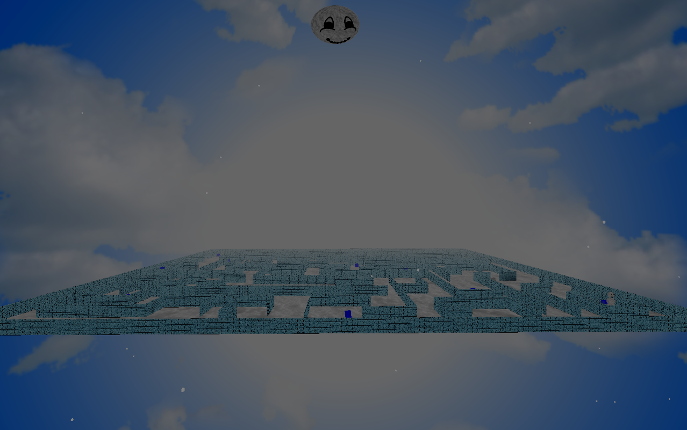
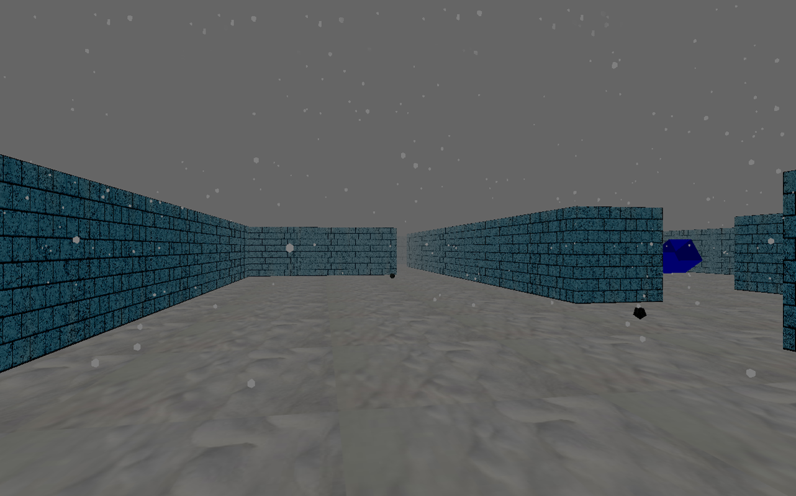
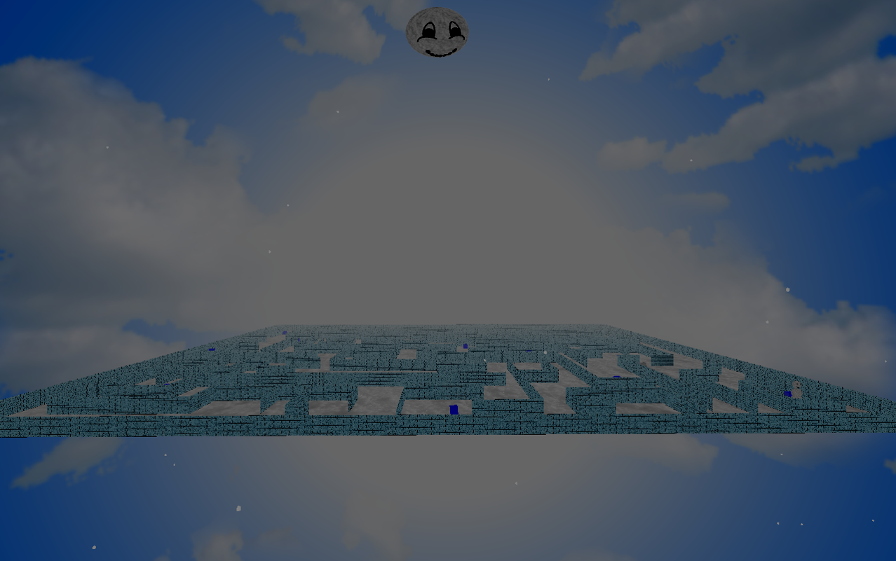
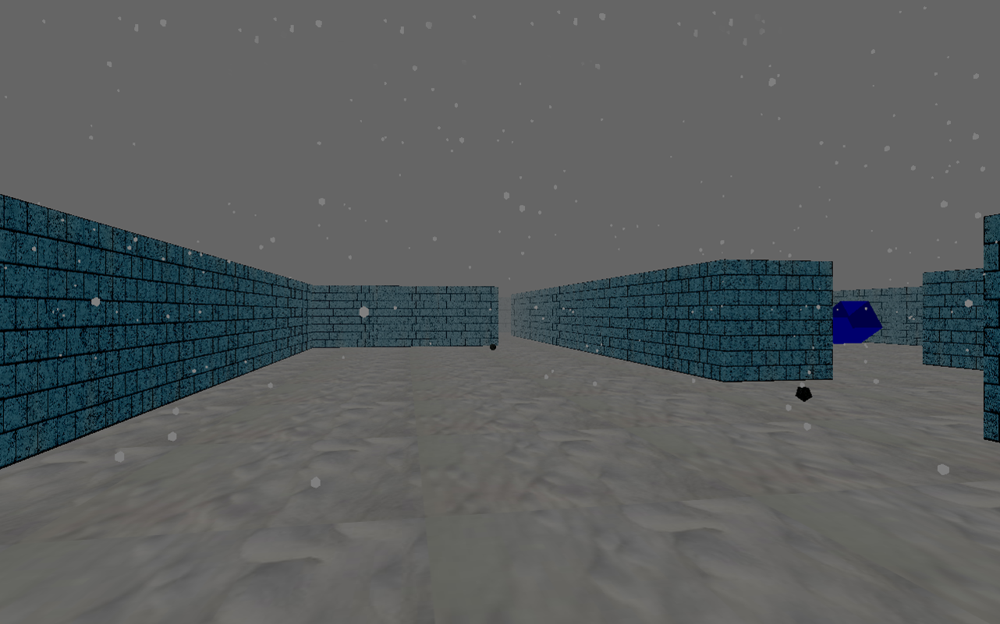

Gaming
During the years, I had the chance to develop or supervise the development of several little videogames. I reported here the ones that are for me most representative.
Mad Snowman
Description: When you get lost in a maze, find the right path to exit is not the only thing you have to take care about. The big problem is to escape from a mad snowman who wants to kill you. You can defend yourself by shooting snow balls. But the weather changes and could be very foggy, so don’t waste your time! Technical features: C++, OpenGL compatibility profile, artificial intelligence (basic), physics (basic).
 



An unical experience - Un'esperienza Unical
Description: An Unical Experience is an Indie videogame developed in team by me and other two collegues. This was a project for “Graphical Interfaces and Event Programming” exam at University of Calabria. The location is right our university, in particular the Bucci’s Bridge. The game was only for didactic purposes. Some of the assets have been taken from open source repository with GNU license, some others have been created or animated with Blender. Technical features: 3D graphics, artificial intelligence, network, java JMonkey engine.
Waldo - The Asset Quest
Story: Waldo, The Asset Quest is a Third Person Shooter. The player is the sentient robot Waldo who travels around dimensions without any conceptual meaning.
The game represents a great challenge, since there are no health collectables or tutorial. All of this makes the player in a confused state which evolves in the consciousness of his means and game mechanics.
In addition, there are many dangers hanging over the player (traps, enemies, bullets, etc.).
Technical features: Unity, C#.
Download and Play